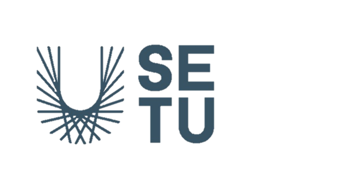
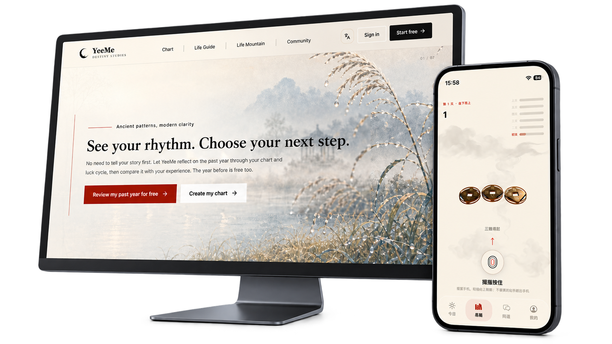

University of Manchester
Sep 2026 – Sep 2027 (expected)MSc Robotics
haruyuki
MSc Robotics
University of Manchester
Hello, and welcome to my portfolio.
I’m a robotics student who enjoys making things — on a screen, in code, and out in the physical world. Here you’ll find a few of my projects, the work I put into them, and the decisions along the way. Have a look around; I’m glad you’re here.
MSc Robotics

South East Technological University (SETU), Ireland
NUIST Waterford Institute · 南京信息工程大学沃特福德学院
BSc, Internet of Things Engineering · Dual-degree programme
Domestic average: 85.9/100 · Overseas degree: First Class Honours

Product direction, design & development
YeeMe is where my interest in visual design meets a working web product. I shaped its bilingual interface, then worked through the AI behaviour, accounts, database and deployment with Codex supporting implementation. I cared about the small connections as much as the first impression: how a page feels, what happens after a click, and whether the whole experience holds together.
Visit YeeMeI established an ink-inspired visual language: landscape imagery, paper-like surfaces, serif typography and restrained red accents. I worked through colour, spacing and component treatments across the homepage, feature pages and account emails, adapting Chinese and English content to desktop and mobile layouts.
I worked on the PostgreSQL data model for accounts, sessions, charts, generated readings, credits and feedback. Defining how those records relate and persist, through Drizzle schemas and migrations, was part of making the individual screens function as one product.
I worked on registration, email verification, code resends and password resets. Signed, expiring proof-of-work challenges, server checks and a database replay registry support abuse prevention alongside rate limits. The account flows connect these checks with the steps visitors see.
I connected the feedback flow to database storage and automatic SMTP forwarding, retaining delivery status when sending fails. I also worked on verification and password-reset emails, including their message structure, sender and reply-to behaviour, and visual consistency.
I worked through domain setup and the routing for www.yeemeapp.com. API requests reach the server handler, while direct frontend URLs resolve to the application. Redirects and password-reset links connect these entry points with the account journey.
I worked on configurable model and endpoint integration behind a server-side adapter. Feature-specific Chinese and English system prompts define the reading structure, tone, context and response boundaries. Provider-error handling and output rules are part of that integration.
Team lead, hardware & software development
Myzooids takes that curiosity into the physical world. As team lead, I coordinated the work while developing circuits, firmware, Android control and mechanical prototypes. Bringing those parts together was a big part of my role — a robot only starts to make sense when its hardware and software can work as one system.
Jul 2024 – Jun 2026
From the workbench
As team lead, I broke the project into hardware, mechanical, software and algorithm tasks, coordinated their progress and worked through the interfaces between them. My role included hands-on development as well as bringing the different contributions into an integrated prototype.
I designed the robot control schematics, produced PCBs and assembled the components. I worked through the board’s connection to firmware and the mechanical structure as part of integrating the electronics into the robot.
I used 3D modelling and printing to iterate the robot structure alongside the electronics. This work connected the physical assembly with board placement, control hardware and the wider prototype.
I developed MCU firmware in C and completed an Android control application. These formed the embedded and mobile sides of the control system, connecting the hardware interfaces with the user’s control surface.
I integrated the hardware interfaces with computer-vision and path-planning modules, then carried out whole-system functional checks. My contribution focused on joining the modules and validating how they worked together.
I organised the source code, design explanations and complete project documentation for publication on GitHub. Recording the build and integration work was part of the project delivery.
I like being involved in the whole making process: the early sketch, the working version, and the details that still need another pass.
I care about how things look, but I’m just as curious about what makes them work. That’s why my projects tend to cross a few boundaries — design, code, electronics and the practical work of joining them together. I’m still learning, and I enjoy having a reason to learn something new. This site is a place to share that process, as well as the finished pieces.